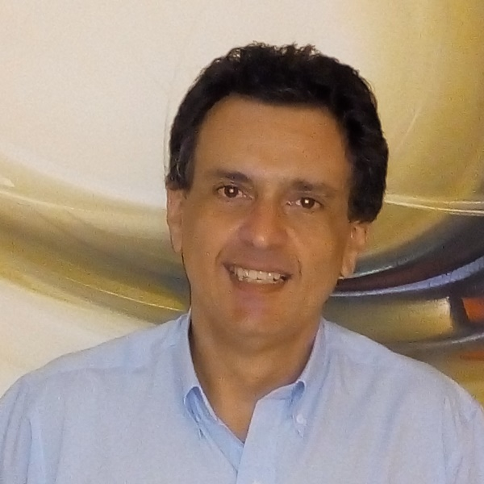
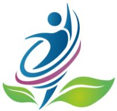
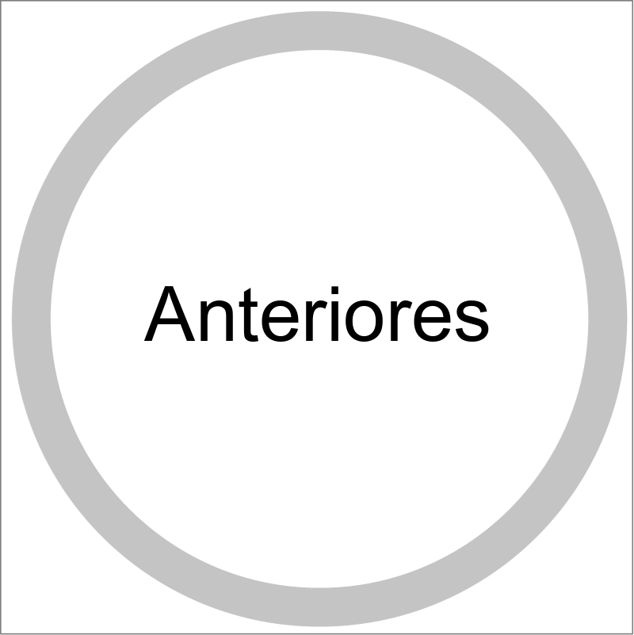

Contatos
+55 19 98194-6837
Av. Dr. Nelson Noronha Gustavo Filho, 150
Campinas, SP
marcosrburatto@gmail.com
marcosanand.com.br
Principais competências
Project Management
Melhoria de Processos
Análise de Custos
Treinamento de Equipes Técnicas
Administração de Empresas
Compras Nacionais e Internacionais
Desenvolvimento de Programas
Prêmios Recebidos
Negociações técnicas bem sucedidas de projetos, pela empresa Kidde Brasil em 2010, 2011 e 2012.
Entrega e exportação de equipamentos fabricados em tempo recorde, pela empresa GE Brasil em 2007.
Entrega de ampliação de energia de um data-center no Rio de Janeiro, pela empresa Nortel Eletricidade em 2004.
Recuperação de projetos de instalações industriais em Mogi-Mirim, pela Global Construções e Montagens Industriais em 1998.
Idiomas
Inglês
Espanhol
MARCOS ROSSI BURATTO, PMP
IT Project Manager
Objetivos
Atuação na área de tecnologia no setor de programação;
Gerenciamento na área de Projetos Técnicos;
Coordenação de processos técnicos e administrativos.
Síntese de Qualificações
Carreira desenvolvida na Gestão de Projetos e Desenvolvimento de Equipes, com ênfase nas Áreas Técnica, de Montagem Industrial e Suprimentos em empresas como General Electric e UTC Climate, Controls & Security (Kidde Brasil).
Carreira Humana desenvolvida na Área Terapêutica, com certificações em Renascimento e Terapias Integradas de Respiração, Música no processo terapêutico, Terapia tântrica, PNL- Programação NeuroLinguística, Hipnose & AutoHipnose, Radiestesia e Radiônica, Reiki, entre outros.
Voluntariado desenvolvido em diversos Centros Espirituais de Campinas, tais como: CEIR, Hospital da Luz, Nave, GMEL, AEUPT, entre outros.
Gerenciamento de Projetos e Obras na Kidde Brasil (UTC Climate, Controls & Security), supervisionando equipes de gerentes de projetos nas áreas de Detecção e Alarme de Incêndio, Detecção e Alarme de presença de gases, supressão de incêndio com uso de gases e sistema de água (sprinkles, hidrantes e dilúvio).
Gerente de Suprimentos responsável por produção customizada, compras de materiais e serviços no Brasil e no exterior, logística nacional e internacional e almoxarifado.
Gerenciamento de Projetos em instalações industriais e comerciais, de projetos nacionais e provenientes do exterior (Americanos, Europeus e Japoneses).
Análise e desenvolvimento de projetos para instalações industriais e comerciais, abrangendo as adequações necessárias para os padrões brasileiros, quando provenientes do exterior.
Importação e exportação de materiais e equipamentos para montagens e instalações industriais.
Responsável pela análise técnica de produtos estrangeiros para importação por empresas nacionais, inclusive com contatos técnicos comerciais com os fabricantes.
Experiência em entregas técnico-comerciais de equipamentos de grande porte nas indústrias em vários estados brasileiros.
Coordenação de vivências emocionais, meditações, Workshops e palestras, realizadas em empresa própria.
Perfil generalista, focado no resultado e formação de cultura corporativa, com grande capacidade de organização e desenvolvimento de equipes.
Hábil no relacionamento com clientes (internos e externos), fornecedores e prestadores de serviços.
Formação Acadêmica e Cursos Complementares
MBA Liderança Estratégica e Gestão de Pessoas na FGV-SP.
Graduação em Engenharia Eletrotécnica e Eletrônica na FESP-SP.
Administração de Empresas para Engenheiros na FAAP-SP.
Formação de desenvolvedores de sistemas (em execução), pela A Liga Digital.
Assembler – Hardware and Software, pelo Colégio Bandeirantes.
Negociação, pela FGV-SP.
Certificação PMP - PMI.
Business English Program (Canadá) pela Global Village.
NR 10 Segurança em Instalações com Eletricidade pela Cietec.
Greenhouse Gas Awareness course, pela GE.
How drugs affect Driving Behaviors, pela GE.
Control of Measuring & Test Equipment, pela GE.
GE Energy Quality Program pela GE.
Microsoft Excel, pela GE.
Microsoft Project, pela GE.
Green Belt, pela GE.
SAP – Módulo de Sourcing e Implantação, pela GE.
Empretec, pelo Sebrae.
Como Desenvolver Lideranças e Motivação, pelo Sebrae.
Manutenção Eletro-Eletrônica de Máquinas a CNC, pela Indústrias Romi.
Automação Pneumática, pela Schrader Bellows.
Formações Terapêuticas e Cursos Complementares
Centro Metamorfose – Deva Nishok
Capacitação em Renascimento pela Respiração.
Capacitação em TIR – Terapias Integradas de Respiração.
Vivência: O Caminho do Amor da Mente para o Coração.
Vivência: Temaskal Tantra (Religare Céu e Terra – Crazy Horse).
Capacitação para Terapeutas Tântricos.
Curso: A Música no processo Terapêutico.
Actius com Fernando Dalgalarrondo
PNL - Programação NeuroLinguística.
Hipnose & AutoHipnose.
Em outros centros
Path of Love com Talib & Shubhaa.
Processo Terapêutico com Wagner Thiele pelo Institut’um Novo Ser.
Reiki Usui com Fabio Jarret pelo Institut’um Novo Ser.
espertar com Maria Lúcia na Casa de Apoio Espiritual do Hospital da Luz.
Nove Passos com Maria Lúcia na Casa de Apoio Espiritual do HL.
Estudos de Conhecimento do Espiritismo no CEAK– C.Espírita Allan Kardec.
Passes de Equilíbrio Energético no CEIR – Centro Espírita Irmã Rosária.
Técnicas Apométricas – Projeções de Memórias no GAAC.
Passes de Equilíbrio Energético no GAAC.
Estudos de Desenvolvimento da Mediunidade no CEIR.
Gestão de Pessoas e Equipes pelo Sebrae.
Radiestesia e Radiônica com Professor Hugo Antoniazzi.
Vivência na Westshore, Victoria, BC, Canada.
Trabalhos voluntários realizados
Corrente de energia na Associação Espírita de Umbanda Pai Tajubim.
Passes Energéticos de Cura no CEIR – Centro Espírita Irmã Rosária.
Equilíbrio Energético no Nave – Núcleo de Amor, Verdade e Evolução.
Desbloqueios de Energias nos meridianos e nos chakras na Casa de Apoio Espiritual do Hospital da Luz.
Harmonização de corpos espirituais na Casa de Apoio Espiritual do Hospital da Luz.
Aconselhamento Espiritual e Emocional na Casa de Apoio Espiritual do Hospital da Luz.
Suporte Energético no atendimento na Casa de Apoio Espiritual do Hospital da Luz.
Identificação de Obsessores desencarnados na Casa de Apoio Espiritual do H.L.
Identificação de Energias Densas Prejudiciais na Casa de Apoio Espiritual do H.L.
Remoção de Energias Densas na Casa de Apoio Espiritual do Hospital da Luz.
Equilíbrio Energético na Casa de Apoio Espiritual do Hospital da Luz.
Transmissão Fluídica na Casa de Apoio Espiritual do Hospital da Luz.
Equilíbrio Energético visando trabalhos de cura através de Invocações Quânticas orientadas pelos Mestres Espirituais no Grupo Multivibracional Estrelas de Luz.
Trabalhos de tratamento de Energias Densas visando a Harmonização do Ser Humano no Grupo Multivibracional Estrelas de Luz.
Experiência Internacional
Estados Unidos – Reuniões técnicas e treinamentos.
Chile – Serviços em obras.
México – Implantação do sistema de controle SAP.
Canadá – Estudos.
Histórico Profissional

09/2013 - 02/2020 Campinas, SP
Semente Viva Desenvolvimento Humano
Empresa própria de desenvolvimento emocional e gerenciamento de equipes de alta performance.
Processos de Coaching e Vivências Pessoais.
-
Vivências pessoais em TIR – Terapias Integradas da Respiração, Música no processo terapêutico, hipnose e auto-hipnose em procedimentos presenciais.
-
Cursos e palestras destinados a elevação do padrão emocional pessoal de equipes, integrando corpo, mente e espírito.
-
Trabalhos específicos destinados a profissionais indicados pela empresa.
08/2010 – 08/2013 Vinhedo, SP
KIDDE BRASIL (UTC Climate, Controls & Security)
Empresa multinacional fabricante de equipamentos e projetos para detecção e supressão de incêndios.
Gerente Departamento de Projetos e Obras.
-
Responsável por uma equipe de gerentes de projetos, engenheiros residentes, planejamento e documentações técnicas.
-
Garantia das metas de faturamento e lucro esperado dos projetos.
-
Projetos de sistema de alarme e detecção de gás, chama e fumaça, incluindo a supressão de fogo utilizando gases (Novec, FM 200 e CO2) e água (sprinklers, hidrantes, dilúvio).
-
Negociação direta com os principais clientes para atendimento das expectativas contratuais, renegociação de aditivos contratuais e análise da execução de instalações em campo. Principais clientes: Votorantim Metais, Suzano Papel e Celulose, Thyssenkrupp, GDK, BSC (Bahia Specialty Cellulose), Alumar (Alumínio do Maranhão), CNO - Construtora Norberto Odebrecht, entre outros, totalizando 172 projetos simultâneos de diversos valores.
-
Participante no grupo de implantação do ACE (Achieving Competitive Excellence), um sistema operacional prioritário para assegurar a qualidade dos serviços e processos internos.
09/2005 – 06/2009 Campinas, SP
GENERAL ELECTRIC DO BRASIL Controls & Optimization
Empresa multinacional americana fabricante de equipamentos para controle de geração de energia.
Gerente de Suprimentos
-
Gerenciamento e planejamento da produção customizada na confecção de painéis elétricos e equipamentos mecânicos (unidade de pressão hidráulica) para controle e monitoramento de turbinas de geração de energia elétrica de usinas hidrelétricas nacionais e internacionais.
-
Criação do almoxarifado de matérias primas destinadas a produção e instalações industriais.
-
Responsável pela compra de itens de alto valor, nacionais e internacionais, incluindo negociações comerciais com grandes empresas, além da certificação de fornecedores para aquisição de materiais e serviços.
-
Desenvolvimento de processos internos para controle de pagamento a fornecedores de serviços, registros de inspeção de qualidade, processo de classificação fiscal e processos de importação e exportação via desembaraço expresso visando redução de prazo.
-
Gerenciamento da área de importação e exportação, bem como a área de expedição, sendo responsável pelo contato com empresas de despachos alfandegários para nacionalização de materiais e equipamentos importados e exportação de materiais e produtos acabados.
-
Implantação do sistema SAP no escritório do México e preparação para os escritórios da Argentina, Chile e Venezuela na área de sourcing.
-
Certificação do mapeamento dos processos internos da empresa de acordo com a metodologia americana do SOX.
-
Recebimento de premiação devido à entrega de projetos em produção em tempo inferior ao planejado.
12/1996 – 09/2005 Campinas, SP
RESOLUÇÃO ENGENHARIA
Empresa prórpia do segmento de instalações industriais.
Diretor Técnico.
-
Gerenciamento de Projetos em instalações elétricas (MT e BT), automação, hidro-sanitárias, mecânicas, sistema de proteção contra descargas elétricas atmosféricas, civil (bases de equipamentos), combate a incêndio, máquinas e equipamentos industriais em empresas como Boehringer de Angeli Química e Farmacêutica, Eaton, Lion (Grupo Caterpillar), Engelhard do Brasil, GVS do Brasil, Medley, Marwall do Brasil (Grupo Magneti Marelli), Gessy Lever, ITAL, Ferroban, Unimetal e diversos outros.
-
Planejamento geral da execução dos serviços, compras de materiais de acordo com o fluxo de caixa e necessidade e medições de serviços executados junto ao cliente final e empreiteiros.
-
Experiência na negociação com fornecedores de equipamentos e serviços, para atendimento dos projetos dentro dos prazos acordados, além da administração e revisão orçamentária dos serviços terceirizados sempre no intuito de cumprir com o previsto.
-
Direção de equipes técnicas (nacionais e internacionais) e equipes de trabalho na instalação de equipamentos e tubulações, na remoção e reinstalação de diversos equipamentos, realização de reuniões técnico-comerciais com os clientes finais para aprovação de serviços extras e proposição de soluções técnicas.
-
Acompanhamento de verificação e testes dos sistemas implantados para comprovar a funcionalidade dos estudos e implantações efetuadas.
03/1992 – 12/1996 Campinas, SP
MONTAG ENGENHARIA INDUSTRIAL
Empresa nacional do segmento de instalações industriais.
Engenheiro Eletricista / Planejamento.

1980 – 1992 EMPRESAS ANTERIORES São Paulo, SP